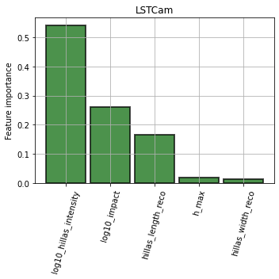
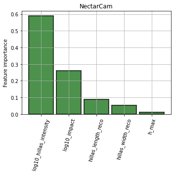
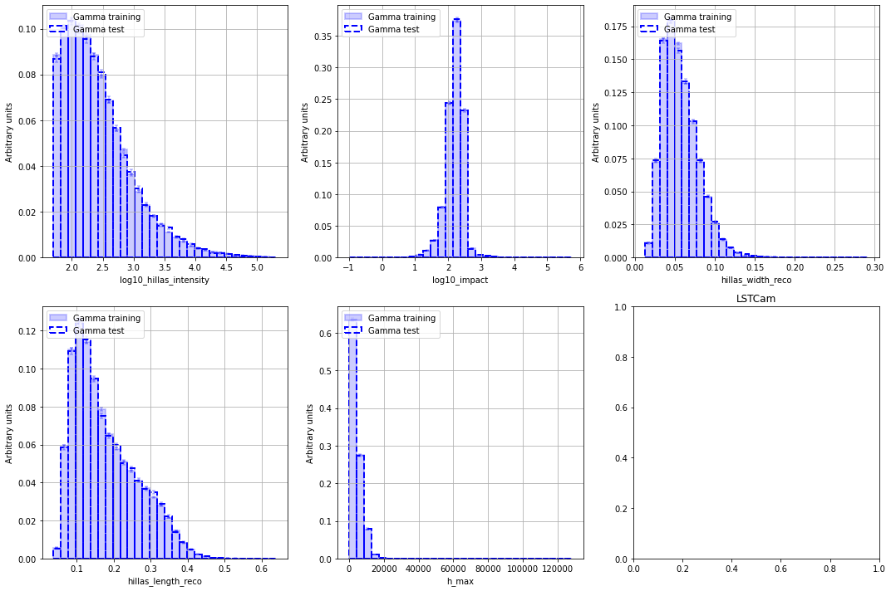
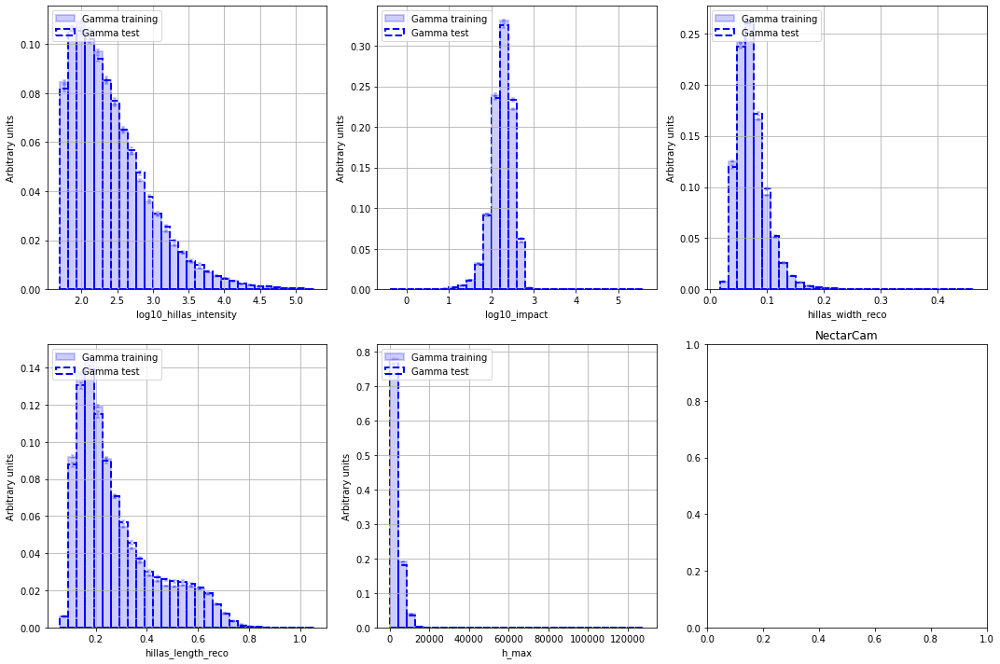
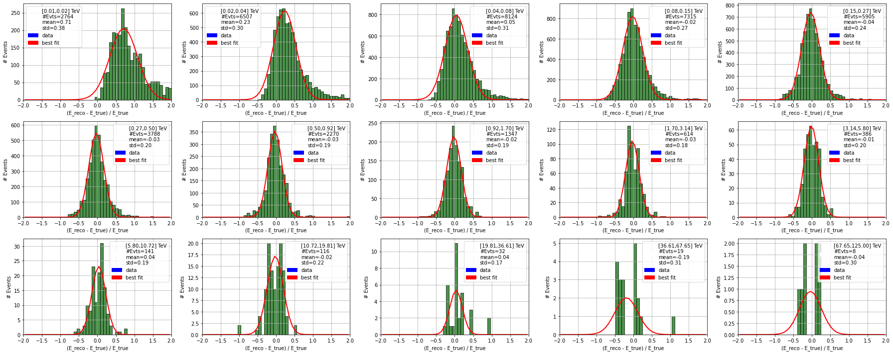
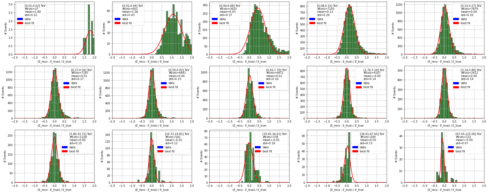
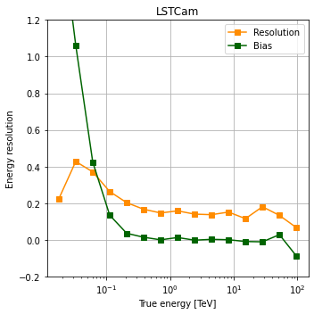
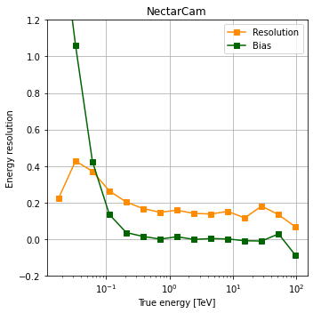

[1]:
# Remove input cells at runtime (nbsphinx)
import IPython.core.display as d
d.display_html('<script>jQuery(function() {if (jQuery("body.notebook_app").length == 0) { jQuery(".input_area").toggle(); jQuery(".prompt").toggle();}});</script>', raw=True)
Energy reconstruction (MODEL)¶
This notebook contains the same code as in protopipe.scripts.model_diagnostic. It should be used to test the performance of the trained model before use it to estimate the energy of DL2 events.
In fact, what happens in a protopipe analysis is that part of the TRAINING sample is used for testing the models to get some preliminary diagnostics. This notebook shows this camera-wise preliminary diagnostics.
Settings and setup of the plots are done using the same configuration file used for training the model.
Developers
Please, if you have any contribution regarding this part, do it here and not in the relevant sections of the main code, which are now discontinued.
Table of contents¶
[2]:
import gzip
import glob
from os import path
import pickle
import joblib
import yaml
import numpy as np
import pandas as pd
from scipy.optimize import curve_fit
import matplotlib.pyplot as plt
import matplotlib.patches as mpatches
plt.rcParams.update({'figure.max_open_warning': 0})
[3]:
def load_config(name):
"""Load YAML configuration file."""
try:
with open(name, "r") as stream:
cfg = yaml.load(stream, Loader=yaml.FullLoader)
except FileNotFoundError as e:
print(e)
raise
return cfg
[4]:
def load_obj(name ):
"""Load object in binary"""
with gzip.open(name, 'rb') as f:
return pickle.load(f)
[5]:
def plot_hist(ax, data, nbin, limit, norm=False, yerr=False, hist_kwargs={}, error_kw={}):
"""Utility function to plot histogram"""
bin_edges = np.linspace(limit[0], limit[-1], nbin + 1, True)
y, tmp = np.histogram(data, bins=bin_edges)
weights = np.ones_like(y)
if norm is True:
weights = weights / float(np.sum(y))
if yerr is True:
yerr = np.sqrt(y) * weights
else:
yerr = np.zeros(len(y))
centers = 0.5 * (bin_edges[1:] + bin_edges[:-1])
width = bin_edges[1:] - bin_edges[:-1]
ax.bar(centers, y * weights, width=width, yerr=yerr, error_kw=error_kw, **hist_kwargs)
return ax
[6]:
def plot_distributions(feature_list,
data_list,
nbin=30,
hist_kwargs_list={},
error_kw_list={},
ncols=2):
"""Plot feature distributions for several data set. Returns list of axes."""
n_feature = len(feature_list)
nrows = int(n_feature / ncols) if n_feature % ncols == 0 else int((n_feature + 1) / ncols)
fig, axes = plt.subplots(nrows=nrows, ncols=ncols, figsize=(5 * ncols, 5 * nrows))
if nrows == 1 and ncols == 1:
axes = [axes]
else:
axes = axes.flatten()
for i, colname in enumerate(feature_list):
ax = axes[i]
# Range for binning
range_min = min([data[colname].min() for data in data_list])
range_max = max([data[colname].max() for data in data_list])
myrange = [range_min, range_max]
for j, data in enumerate(data_list):
ax = plot_hist(
ax=ax, data=data[colname], nbin=nbin, limit=myrange,
norm=True, yerr=True,
hist_kwargs=hist_kwargs_list[j],
error_kw=error_kw_list[j]
)
ax.set_xlabel(colname)
ax.set_ylabel('Arbitrary units')
ax.legend(loc='upper left')
ax.grid()
plt.tight_layout()
return fig, axes
[7]:
def get_evt_subarray_model_output(data,
weight_name=None,
keep_cols=['reco_energy'],
model_output_name='score_img',
model_output_name_evt='score'):
"""
Returns DataStore with keepcols + score/target columns of model at the
level-subarray-event.
Parameters
----------
data: `~pandas.DataFrame`
Data frame
weight_name: `str`
Variable name in data frame to weight events with
keep_cols: `list`, optional
List of variables to keep in resulting data frame
model_output_name: `str`, optional
Name of model output (image level)
model_output_name: `str`, optional
Name of averaged model output (event level)
Returns
--------
data: `~pandas.DataFrame`
Data frame
"""
keep_cols += [model_output_name]
keep_cols += [weight_name]
new_data = data[keep_cols].copy(deep=True)
new_data[model_output_name_evt] = np.zeros(len(new_data))
new_data.set_index(["tel_id"], append=True, inplace=True)
new_data[model_output_name_evt] = new_data.groupby(["obs_id", "event_id"]).apply(
lambda g: np.average(g[model_output_name], weights=g[weight_name])
)
# Remove columns
new_data = new_data.drop(columns=[model_output_name])
# Remove duplicates
new_data = new_data[~new_data.index.duplicated(keep="first")]
return new_data
[8]:
class ModelDiagnostic(object):
"""
Base class for model diagnostics.
Parameters
----------
model: `~sklearn.base.BaseEstimator`
Best model
feature_name_list: list
List of the features used to buil the model
target_name: str
Name of the target (e.g. score, gamaness, energy, etc.)
"""
def __init__(self, model, feature_name_list, target_name):
self.model = model
self.feature_name_list = feature_name_list
self.target_name = target_name
def plot_feature_importance(self, ax, **kwargs):
"""
Plot importance of features
Parameters
----------
ax: `~matplotlib.axes.Axes`
Axis
"""
if ax is None:
import matplotlib.pyplot as plt
ax = plt.gca()
importance = self.model.feature_importances_
importance, feature_labels = \
zip(*sorted(zip(importance, self.feature_name_list), reverse=True))
bin_edges = np.arange(0, len(importance)+1)
bin_width = bin_edges[1:] - bin_edges[:-1] - 0.1
ax.bar(bin_edges[:-1], importance, width=bin_width, **kwargs)
ax.set_xticks(np.arange(0, len(importance)))
ax.set_xticklabels(feature_labels, rotation=75)
return ax
def plot_features(self, data_list,
nbin=30,
hist_kwargs_list={},
error_kw_list={},
ncols=2):
"""
Plot model features for different data set (e.g. training and test samples).
Parameters
----------
data_list: list
List of data
nbin: int
Number of bin
hist_kwargs_list: dict
Dictionary with histogram options
error_kw_list: dict
Dictionary with error bar options
ncols: int
Number of columns
"""
return plot_distributions(
self.feature_name_list,
data_list,
nbin,
hist_kwargs_list,
error_kw_list, ncols
)
def add_image_model_output(self):
raise NotImplementedError("Please Implement this method")
[9]:
class RegressorDiagnostic(ModelDiagnostic):
"""
Class to plot several diagnostic plots for regression.
Parameters
----------
model: sklearn.base.BaseEstimator
Scikit model
feature_name_list: str
List of features
target_name: str
Name of target (e.g. `mc_energy`)
data_train: `~pandas.DataFrame`
Data frame
data_test: `~pandas.DataFrame`
Data frame
"""
def __init__(self, model, feature_name_list, target_name, data_train, data_test, output_name):
super().__init__(model, feature_name_list, target_name)
self.data_train = data_train
self.data_test = data_test
self.target_estimation_name = self.target_name
self.output_name = output_name
self.output_name_img = output_name + '_img'
# Compute and add target estimation
self.data_train = self.add_image_model_output(
self.data_train,
col_name=self.output_name_img
)
self.data_test = self.add_image_model_output(
self.data_test,
col_name=self.output_name_img
)
@staticmethod
def plot_resolution_distribution(ax, y_true, y_reco, nbin=100, fit_range=[-3,3],
fit_kwargs={}, hist_kwargs={}):
"""
Compute bias and resolution with a gaussian fit
and return a plot with the fit results and the migration distribution.
"""
def gauss(x, ampl, mean, std):
return ampl * np.exp(-0.5 * ((x - mean) / std) ** 2)
if ax is None:
ax = plt.gca()
migration = (y_reco - y_true) / y_true
bin_edges = np.linspace(fit_range[0], fit_range[-1], nbin + 1, True)
y, tmp = np.histogram(migration, bins=bin_edges)
x = (bin_edges[:-1] + bin_edges[1:]) / 2
try:
param, cov = curve_fit(gauss, x, y)
except:
param = [-1, -1, -1]
cov = [[]]
#print('Not enough stat ? (#evts={})'.format(len(y_true)))
plot_hist(
ax=ax, data=migration, nbin=nbin,
yerr=False,
norm=False,
limit=fit_range,
hist_kwargs=hist_kwargs
)
ax.plot(x, gauss(x, param[0], param[1], param[2]), **fit_kwargs)
return ax, param, cov
def add_image_model_output(self, data, col_name):
data[col_name] = self.model.predict(data[self.feature_name_list])
return data
[10]:
# Please, if you modify this notebook through a pull request empty these variables before pushing
analysesDir = "" # Where all your analyses are stored
analysisName = "" # The name of this analysis
[11]:
configuration = f"{analysesDir}/{analysisName}/configs/regressor.yaml"
cfg = load_config(configuration)
model_type = cfg["General"]["model_type"]
method_name = cfg["Method"]["name"]
inDir = f"{analysesDir}/{analysisName}/estimators/energy_regressor"
cameras = [model.split('/')[-1].split('_')[2] for model in glob.glob(f"{inDir}/regressor*.pkl.gz")]
[12]:
data = {camera : dict.fromkeys(["model", "data_scikit", "data_train", "data_test"]) for camera in cameras}
for camera in cameras:
data[camera]["data_scikit"] = load_obj(
glob.glob(f"{inDir}/data_scikit_{model_type}_{method_name}_*_{camera}.pkl.gz")[0]
)
data[camera]["data_train"] = pd.read_pickle(
glob.glob(f"{inDir}/data_train_{model_type}_{method_name}_*_{camera}.pkl.gz")[0]
)
data[camera]["data_test"] = pd.read_pickle(
glob.glob(f"{inDir}/data_test_{model_type}_{method_name}_*_{camera}.pkl.gz")[0]
)
modelName = f"{model_type}_*_{camera}_{method_name}.pkl.gz"
data[camera]["model"] = joblib.load(glob.glob(f"{inDir}/{modelName}")[0])
[13]:
# Energy (both true and reconstructed)
nbins = cfg["Diagnostic"]["energy"]["nbins"]
energy_edges = np.logspace(
np.log10(cfg["Diagnostic"]["energy"]["min"]),
np.log10(cfg["Diagnostic"]["energy"]["max"]),
nbins + 1,
True,
)
[14]:
diagnostic = dict.fromkeys(cameras)
for camera in cameras:
diagnostic[camera] = RegressorDiagnostic(
model=data[camera]["model"],
feature_name_list=cfg["FeatureList"],
target_name="true_energy",
data_train=data[camera]["data_train"],
data_test=data[camera]["data_test"],
output_name="reco_energy",
)
Benchmarks¶
Feature importance¶
[15]:
for camera in cameras:
plt.figure(figsize=(5, 5))
ax = plt.gca()
ax = diagnostic[camera].plot_feature_importance(
ax,
**{"alpha": 0.7, "edgecolor": "black", "linewidth": 2, "color": "darkgreen"}
)
ax.set_ylabel("Feature importance")
ax.grid()
plt.title(camera)
plt.tight_layout()


Feature distributions¶
[16]:
for camera in cameras:
print(" ====================================================================================")
print(f" {camera} ")
print(" ====================================================================================")
fig, axes = diagnostic[camera].plot_features(
data_list=[data[camera]["data_train"], data[camera]["data_test"]],
nbin=30,
hist_kwargs_list=[
{
"edgecolor": "blue",
"color": "blue",
"label": "Gamma training",
"alpha": 0.2,
"fill": True,
"ls": "-",
"lw": 2,
},
{
"edgecolor": "blue",
"color": "blue",
"label": "Gamma test",
"alpha": 1,
"fill": False,
"ls": "--",
"lw": 2,
},
],
error_kw_list=[
dict(ecolor="blue", lw=2, capsize=2, capthick=2, alpha=0.2),
dict(ecolor="blue", lw=2, capsize=2, capthick=2, alpha=0.2),
],
ncols=3,
)
plt.title(camera)
fig.tight_layout()
====================================================================================
LSTCam
====================================================================================
====================================================================================
NectarCam
====================================================================================


Migration distribution¶
[17]:
for camera in cameras:
# Compute averaged energy
# print("Process test sample...")
print(" ====================================================================================")
print(f" {camera} ")
print(" ====================================================================================")
data_test_evt = get_evt_subarray_model_output(
data[camera]["data_test"],
weight_name="hillas_intensity_reco",
keep_cols=["tel_id", "true_energy"],
model_output_name="reco_energy_img",
model_output_name_evt="reco_energy",
)
ncols = 5
nrows = (
int(nbins / ncols) if nbins % ncols == 0 else int((nbins + 1) / ncols)
)
if nrows == 0:
nrows = 1
ncols = 1
fig, axes = plt.subplots(nrows=nrows, ncols=ncols, figsize=(5 * 5, 10))
try:
axes = axes.flatten()
except:
axes = [axes]
bias = []
resolution = []
energy_centres = []
for ibin in range(len(energy_edges) - 1):
ax = axes[ibin]
test_data = data_test_evt.query(
"true_energy >= {} and true_energy < {}".format(
energy_edges[ibin], energy_edges[ibin + 1]
)
)
# print("Estimate energy for {} evts".format(len(test_data)))
er = test_data["reco_energy"]
emc = test_data["true_energy"]
opt_hist = {
"edgecolor": "black",
"color": "darkgreen",
"label": "data",
"alpha": 0.7,
"fill": True,
}
opt_fit = {"c": "red", "lw": 2, "label": "Best fit"}
ax, fit_param, cov = diagnostic[camera].plot_resolution_distribution(
ax=ax,
y_true=emc,
y_reco=er,
nbin=50,
fit_range=[-2, 2],
hist_kwargs=opt_hist,
fit_kwargs=opt_fit,
)
if fit_param[2] < 0: # negative value are allowed for the fit
fit_param[2] *= -1
label = "[{:.2f},{:.2f}] TeV\n#Evts={}\nmean={:.2f}\nstd={:.2f}".format(
energy_edges[ibin],
energy_edges[ibin + 1],
len(er),
fit_param[1],
fit_param[2],
)
ax.set_ylabel("# Events")
ax.set_xlabel("(E_reco - E_true) / E_true")
ax.set_xlim([-2, 2])
ax.grid()
evt_patch = mpatches.Patch(color="white", label=label)
data_patch = mpatches.Patch(color="blue", label="data")
fit_patch = mpatches.Patch(color="red", label="best fit")
ax.legend(loc="best", handles=[evt_patch, data_patch, fit_patch])
plt.tight_layout()
#print(
# " Fit results: ({:.3f},{:.3f} TeV)".format(
# energy_edges[ibin], energy_edges[ibin + 1]
# )
#)
#try:
# print(" - A : {:.3f} +/- {:.3f}".format(fit_param[0], cov[0][0]))
# print(" - mean : {:.3f} +/- {:.3f}".format(fit_param[1], cov[1][1]))
# print(" - std : {:.3f} +/- {:.3f}".format(fit_param[2], cov[2][2]))
#except:
# print(" ==> Problem with fit, no covariance...".format())
# continue
bias.append(fit_param[1])
resolution.append(fit_param[2])
energy_centres.append(
(energy_edges[ibin] + energy_edges[ibin + 1]) / 2.0
)
plt.show()
====================================================================================
LSTCam
====================================================================================

====================================================================================
NectarCam
====================================================================================

Energy resolution and bias¶
[18]:
for camera in cameras:
plt.figure(figsize=(5, 5))
ax = plt.gca()
ax.plot(
energy_centres,
resolution,
marker="s",
color="darkorange",
label="Resolution",
)
ax.plot(energy_centres, bias, marker="s", color="darkgreen", label="Bias")
ax.set_xlabel("True energy [TeV]")
ax.set_ylabel("Energy resolution")
ax.set_xscale("log")
ax.grid()
ax.legend()
ax.set_ylim([-0.2, 1.2])
plt.title(camera)
plt.tight_layout()


[ ]: